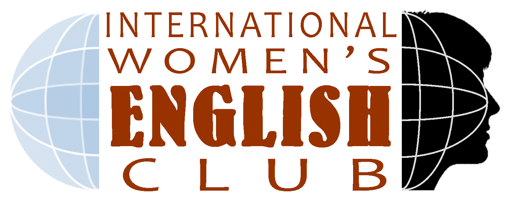

Following are the events we host at International Connections.
International Coffe Hour
International Coffee Hour is an opportunity for internationals to connect with other internationals and Americans & to explore the message of the Bible together.
International Women's English Club
International Women’s English Club (IWEC) is an avenue for international women to learn and improve on their English. Click here to Register for the event.
International Book Connection (IBC) is a book club for international women to read and discuss a book together with a group of American and international women.
International Bible Study for Women
International Connections hosts a Bible Study session dedicated exclusively for Women. Join us to learn more about Bible and Christianity.
International Coffee Hour is an opportunity for internationals to connect with other internationals and Americans & to explore the message of the Bible together. Learn more about the Bible, Christianity and Jesus. Join us for a time of refreshments, socializing & discussing the Bible in a relaxed atmosphere.
Current Discussion Series: THE HOPE VIDEO
Understanding Christianity, Bible and Jesus Christ
Do you want to learn more about the Bible and Jesus Christ? Have you been confused about what Christians actually believe?
This new discussion series will help you understand Christianity, Bible and Jesus Christ better.
You will find this series useful whether you are new to Christianity, never been to a church or already a
Christian. We will watch short video clips each week that tells the story of the Bible and have discussions in
small groups.
Join us, for this new series at Coffee Hour entitled The Hope Video,
where during this semester we will explore all the major stories of the Bible and help understand the message
of the Bible better.
Location and Timing:
Every Sunday at 9:30 am,
Room R362,
Sherwood Oaks Christian Church.
Pickup Schedule
Time
Location
8:55
Redbud/Evermann (bus stop)
8:58
Hepburn (BBHN)
9:00
Campus View (front entrance)
9:02
Eigenmann (front entrance)
9:05
Tulip Tree (front entrance)
9:10
Fountain Park (Leasing Office)
9:15
Park Doral (Leasing Office)

Come, develop new friendships and learn English.
International Women’s English Club (IWEC) is an avenue for
international women to learn and improve on their English.
There are opportunities to discuss topics of general interest
and relevance for international women.
Location and Timing:
Every Tuesday (beginning January 24) from 9:30 am to 11:15 am,
Room R362,
Sherwood Oaks Christian Church.
Time
Location
9:00
Redbud/Evermann (bus stop)
9:05
Campus View (front entrance)
9:10
Tulip Tree (front entrance)
9:15
Fountain Park (Leasing Office)
International Book Club for Women
International Book Connection (IBC) is a book club for international women to read and discuss a book together with a group of American and international women. One unique feature of IBC is to use the book club to help international women improve their English. At IBC you will also have opportunities to discuss topics of general interest for women.
Current Book: Same Kind of different as me by Ron Hall and Denver Moore
Book Description:
Meet Denver, a man raised under plantation-style slavery in Louisiana in the 1960s; a man who escaped,
hopping a train to wander, homeless, for eighteen years on the streets of Dallas, Texas. No longer a slave,
Denver's life was still hopeless-until God moved. First came a godly woman who prayed, listened, and obeyed.
And then came her husband, Ron, an international arts dealer at home in a world of Armani-suited millionaires.
And then they all came together.
But slavery takes many forms. Deborah discovers that she has cancer.
In the face of possible death, she charges her husband to rescue Denver.
Who will be saved, and who will be lost?
What is the future for these unlikely three? What is God doing?
Same Kind of Different As Me is the emotional tale of their story: a telling of pain and laughter, doubt and
tears, dug out between the bondages of this earth and the free possibility of heaven. No reader or
listener will ever forget it.
Same Kind of Different As Me is a New York Times bestseller written by Ron Hall and Denver Moore.
It is an exciting book that has short chapters, easy to read and very enjoyable.
I am sure this book will be both fun and helpful to all of us.
Location and Timing:
1st and 3rd Wednesday (beginning October 1) from 9:30 am to 11:30 am,
Book Store,
Sherwood Oaks Christian Church
2700 E. Rogers Rd (corner of E. Rogers and Sare Rd)
International Bible Study for Women
International Connections hosts a Bible Study session dedicated exclusively for Women.
Join us to learn more about Bible and Christianity.
Location and Timing:
Every Friday from 9:30 am,
Sherwood Oaks Christian Church
2700 E. Rogers Rd (corner of E. Rogers and Sare Rd)
Contact Rani Rajamani for any assistance.